Clareza
Organizar o pensamento antes de abrir a boca.
Muitas vezes, o que parece insegurança é desorganização. A pessoa sabe o assunto, tem experiência — mas não sabe por onde começar.
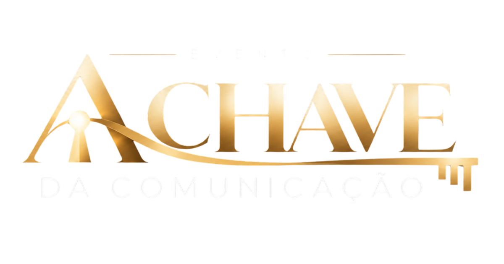
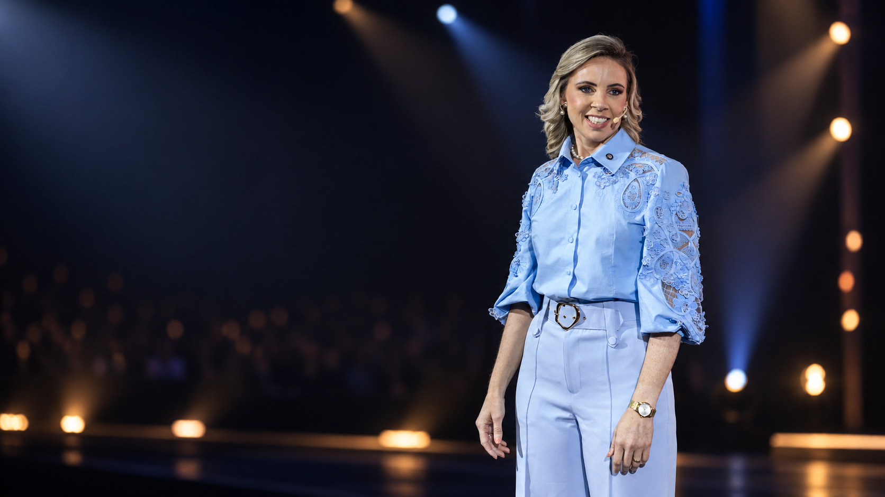
Transforme a maneira como você se comunica, se posiciona e influencia para conquistar mais confiança, oportunidades e resultados.
Vagas limitadas
Sirlei Benetti
Jornalista, palestrante, escritora, empresária e mentora de comunicação.
Há mais de 26 anos, atuo na comunicação vivendo a prática do rádio, da televisão, do jornalismo, das entrevistas, dos palcos e do ambiente corporativo.
Já trabalhei em veículos como TV Globo, Band, BandNews, Terra Viva, AgroMais, TV Tarobá e Rádio CBN, e essa trajetória me permitiu desenvolver uma visão real e completa sobre o que comunica, conecta e gera resultados.
Ao longo da minha carreira, já impactei mais de 200 empresas, realizei centenas de palestras e treinamentos em todo o Brasil e no exterior, e ajudei milhares de profissionais, líderes e empresários a se comunicarem com mais clareza, segurança e influência.
Em A Chave da Comunicação, vou compartilhar tudo o que aprendi em mais de duas décadas de prática e, mais do que isso, vou te ajudar a colocar esse conhecimento em ação.
O ponto cego
O problema é que nem sempre consegue comunicar da maneira como gostaria. Existem momentos em que tudo o que você sabe simplesmente não aparece.
A reunião em que você tinha uma excelente leitura da situação — e outra pessoa falou primeiro.
A negociação em que você sabia o valor do que estava oferecendo, mas não conseguiu sustentá-lo.
O cliente que escolheu um concorrente mais caro e menos preparado, porque o concorrente conseguiu explicar melhor o próprio valor.
A conversa com alguém da sua equipe que você continua adiando.
A apresentação em que você dominava o assunto, mas falou como quem estava pedindo licença.
“Eu deveria ter falado aquilo.”
Existem oportunidades que não são perdidas por falta de conhecimento. São perdidas porque, no momento decisivo, a pessoa não consegue demonstrar tudo o que sabe, pensa e é capaz de entregar.
Foi por isso que nasceu
Uma experiência presencial criada para quem quer desenvolver uma comunicação mais clara, segura, estratégica e influente — sem deixar de ser quem é.
A boa notícia
E habilidade se desenvolve.
Durante muito tempo acreditou-se que comunicação era um dom: ou você nasceu sabendo falar, ou não nasceu. Não funciona assim. Quem comunica bem desenvolveu repertório.
Isso pode ser aprendido. Isso pode ser praticado.
Isso pode ser desenvolvido.
O método
Comunicação envolve diferentes competências. Quando você consegue identificá-las separadamente, consegue treiná-las de maneira muito mais intencional.
Organizar o pensamento antes de abrir a boca.
Muitas vezes, o que parece insegurança é desorganização. A pessoa sabe o assunto, tem experiência — mas não sabe por onde começar.
O que você comunica antes da primeira palavra.
Antes de você terminar a primeira frase, as pessoas já formaram uma percepção sobre a segurança que você transmite. Presença é treinável.
Sustentar o que você pensa sem endurecer e sem recuar.
Posicionamento não é falar mais alto. É ter clareza e segurança para sustentar aquilo que precisa ser dito.
Construir confiança e abrir oportunidades por meio de relações verdadeiras.
Porque muitas das maiores oportunidades profissionais e empresariais começam com uma conversa.
Mão na massa
Você não vai sair apenas sabendo mais sobre comunicação.
Vai sair sabendo o que fazer diferente
Exercícios, dinâmicas, situações reais.
Você sai com roteiros e estruturas prontas para usar no dia seguinte.
Ao final da imersão, você leva
Você precisa aprender a comunicar valor antes de vender.
Quero garantir minha vaga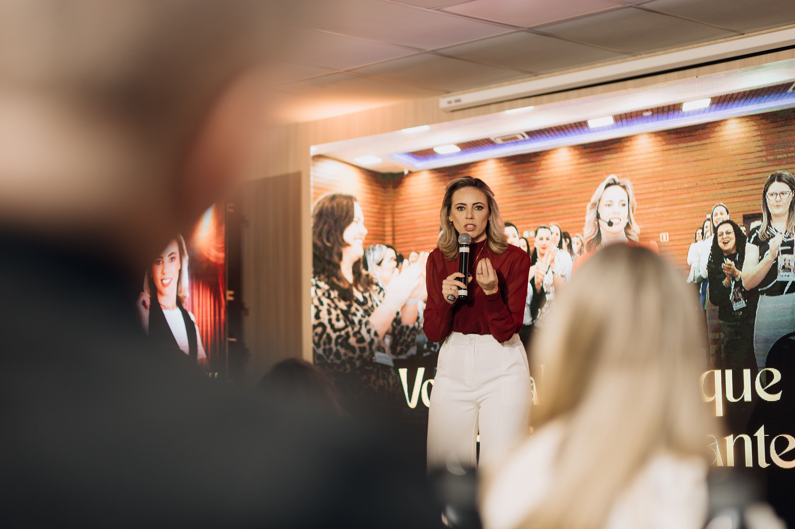
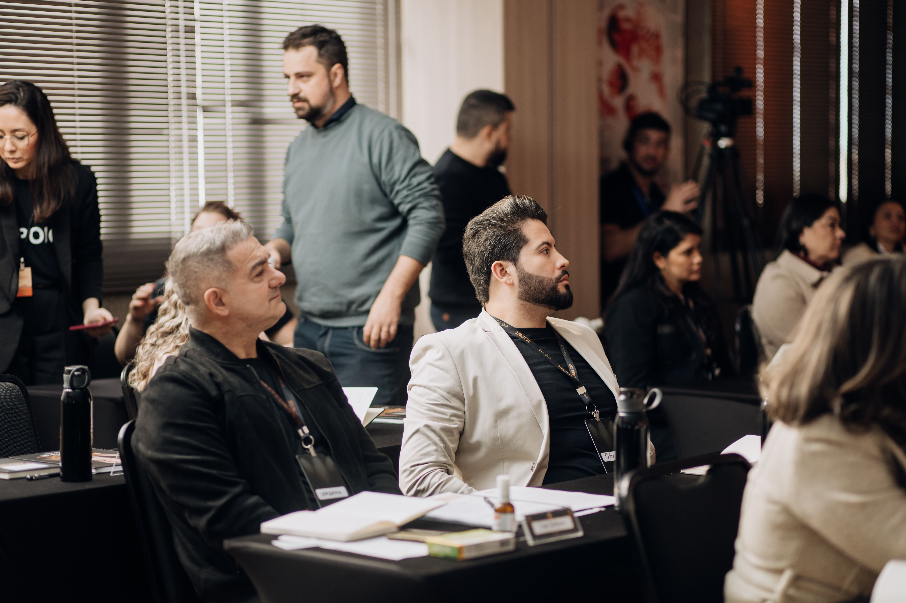


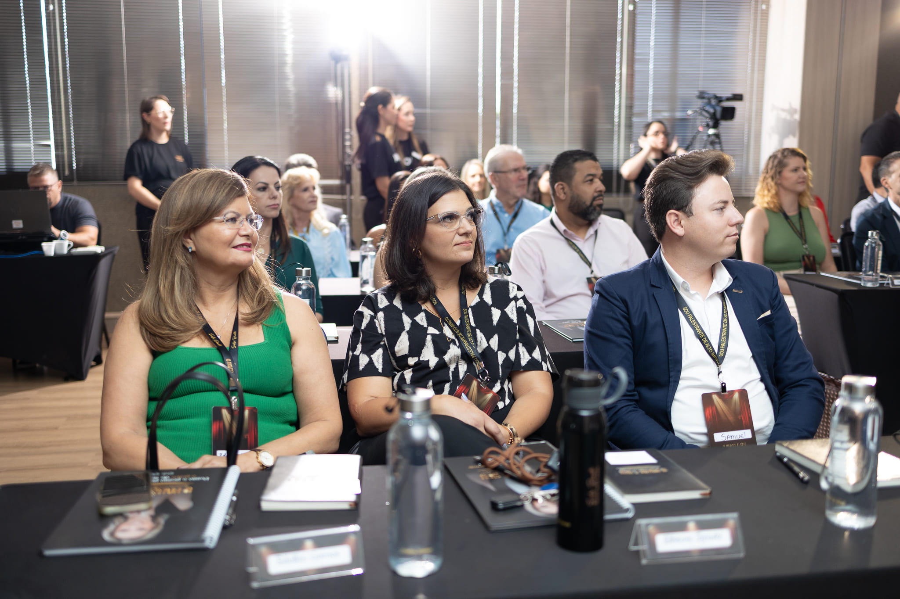
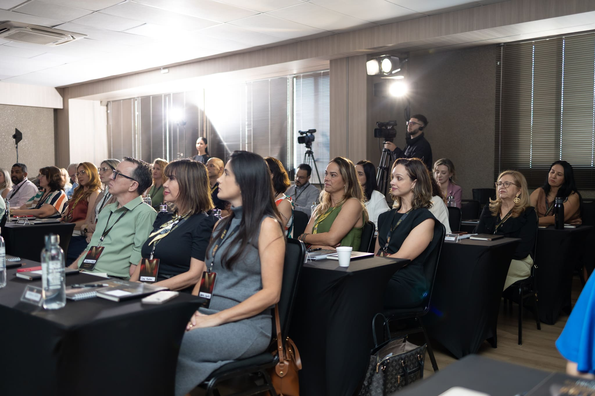
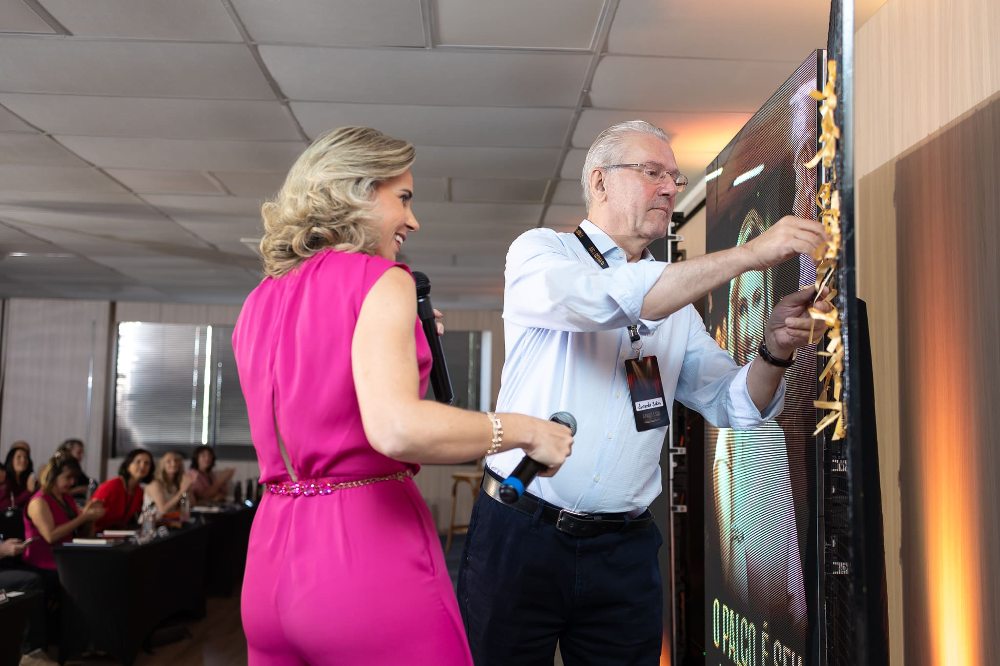
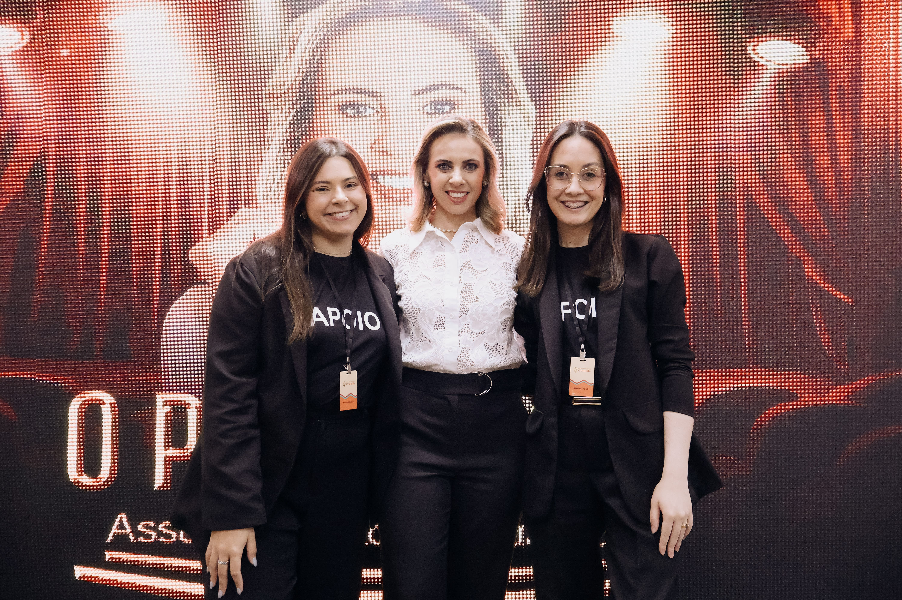
Ambiente
Não queremos uma multidão. Queremos pessoas dispostas a aprender, praticar, compartilhar experiências e construir conexões. Por isso: vagas limitadas.
Você estará ao lado de empresários, líderes, profissionais liberais e gestores que também estão buscando crescer e conquistar novos resultados.
Programação
05 de dezembro de 2026
Cascavel – PR
Um primeiro momento de recepção e conexão entre os participantes.
Um dia inteiro de conteúdo, método, atividades práticas e aplicação.
Intervalo para o almoço.
Fim das atividades do dia.
Experiência exclusiva assinada pelo chef André Guimarães.
Somente VIPPara quem é
Comunicar com mais clareza, segurança e confiança em qualquer situação profissional.
Se posicionar melhor e ter mais influência na sua empresa, na sua equipe e no seu mercado.
Fortalecer seu relacionamento com clientes, parceiros, equipe e outras pessoas.
Conduzir reuniões e negociações com mais segurança e melhores resultados.
Conduzir conversas difíceis sem transformar a conversa em confronto.
Ter roteiros e estruturas prontas para aplicar imediatamente na sua rotina profissional.
Comunicar o valor do que você faz e defender melhor suas propostas, preços e decisões.
Criar conexões verdadeiras que geram oportunidades, parcerias e novos negócios.
Conteúdo
Como se comunicar com mais clareza e segurança em qualquer situação profissional;
Como se posicionar e defender suas ideias, propostas e decisões sem gerar atritos;
Como conduzir reuniões, negociações e conversas difíceis de forma estratégica e eficiente;
Como comunicar seu valor e gerar mais confiança antes de vender;
Como criar conexões verdadeiras que abrem portas e geram oportunidades;
Como aplicar, na prática, um método simples e poderoso para que sua comunicação traga mais resultados na sua vida e nos seus negócios.
O diferencial
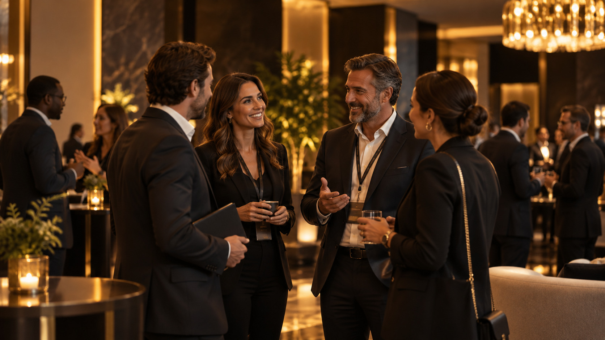
Você vai sair com ferramentas, roteiros e estruturas prontas para aplicar na sua vida profissional e gerar resultados reais já no seu próximo dia de trabalho.
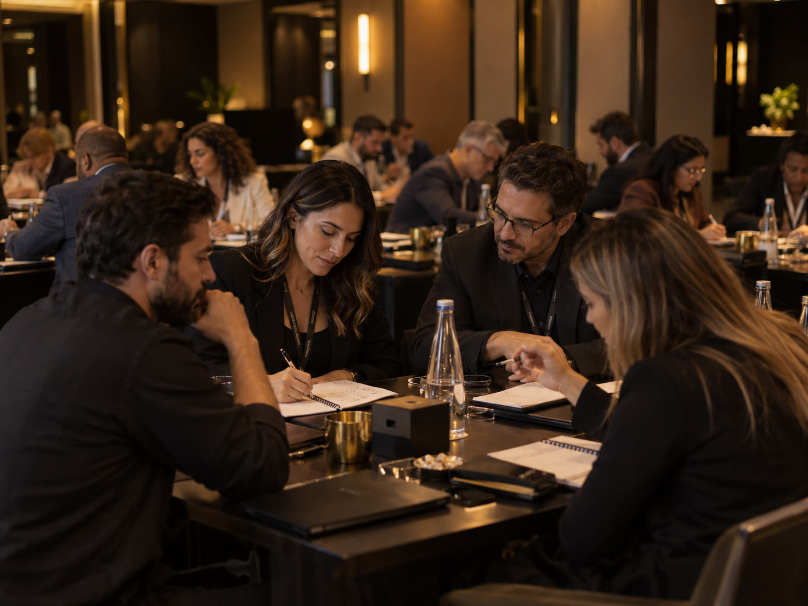
Você vai colocar em prática durante o evento, trabalhando situações reais, com muitas atividades, exercícios e dinâmicas que fazem parte do seu dia a dia.
Você estará em um ambiente com empresários, líderes e profissionais que também buscam crescer, se posicionar e conquistar novos resultados. Um espaço real para troca de experiências e novas parcerias.
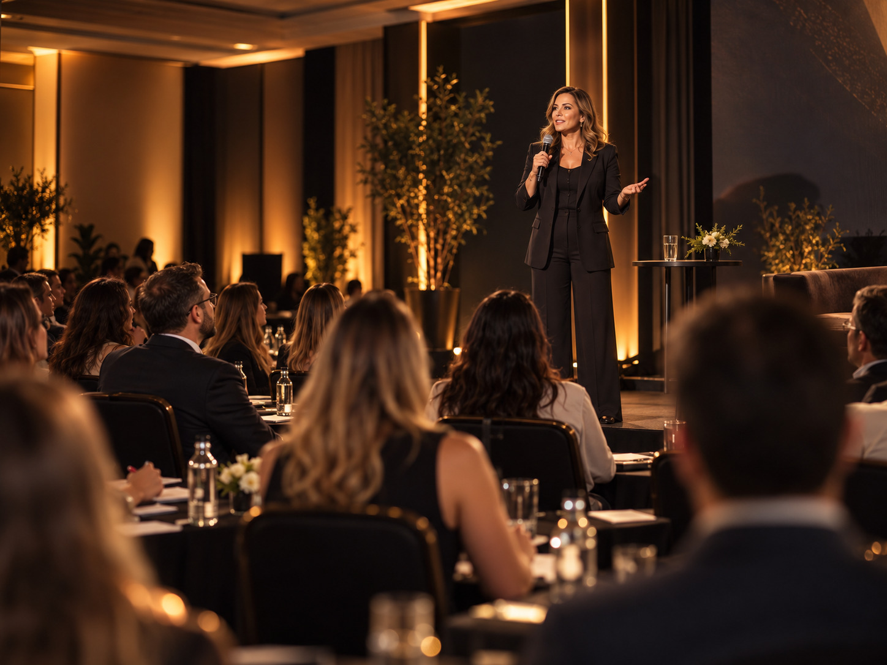
Um dia inteiro, com um método completo, em um grupo seleto, com a energia e a proximidade que só o presencial proporciona. Uma experiência que une conteúdo, prática, conexões e transformação.
Prova
Foi um verdadeiro divisor de águas na minha trajetória profissional.
Antes do processo, eu tendia a guardar minhas ideias em reuniões por receio do julgamento. Agora tenho clareza, segurança e autoridade que preciso para transformar essa postura.
Minha comunicação em reunião tornou-se mais estruturada e direta ao ponto. Consigo sintetizar o raciocínio sem rodeios, o que faz com que as pessoas prestem mais atenção e respeitem o meu tempo de fala.
A condução, a liderança e a firmeza da mentora Sirlei Benetti são impressionantes e são um diferencial importante.
Ela transforma a teoria em prática de forma direta e aplicável, entregando resultados reais na presença e na comunicação de quem participa.
Todo o conteúdo apresentado foi extremamente proveitoso, pertinente e agregou valor do início ao fim.
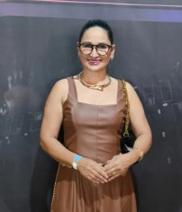
Sueli BetineEmpreendedora e pedagogaAntes de te conhecer, não tinha coragem de gravar nenhum story e hoje gravo receitas em programa de TV, gravo story e me posiciono melhor em reuniões e conversas.
Foi uma explosão na mente em vários sentidos. Aprender comunicação vai muito além de falar em público ou se comunicar no trabalho. É algo que cada detalhe importa e tem que ser intencional a todos momentos.
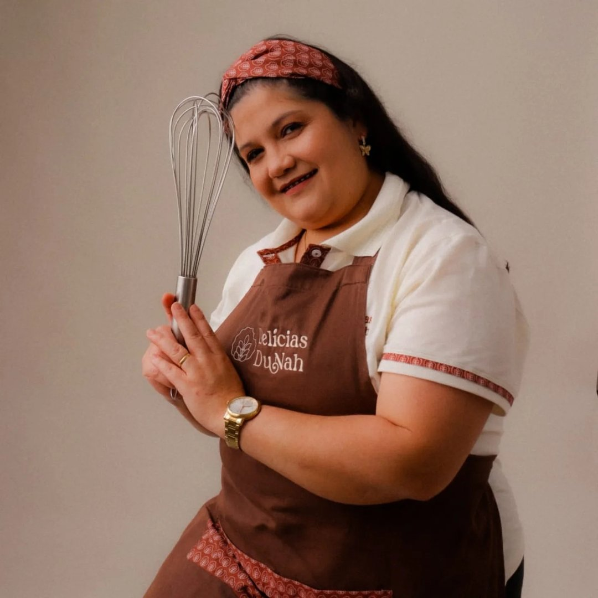
Vanessa GubianiEmpresáriaSirlei, caminhar ao seu lado foi um divisor de águas na minha carreira. Com você, aprendi a valorizar minha história, reconhecer a força da minha trajetória e transformá-la em uma comunicação capaz de gerar conexão e impacto.
Hoje me sinto mais segura e preparada para ocupar o palco e transmitir meu propósito com autenticidade. Muito obrigada por todo o direcionamento, incentivo e aprendizado!
 Fabi LazariConsultora de imagem e palestrante
Fabi LazariConsultora de imagem e palestrante
Sirlei, eu tenho um carinho e uma admiração enormes por você e sou muito grata por tudo que venho aprendendo nesse processo…
Eu sempre amei comunicação e sempre tive esse desejo de palestrar, mas você me fez virar muitas chaves. Mais do que aprender a me comunicar melhor, você me fez entender que, antes de construir a palestrante, eu precisava olhar para mim!!
E foi através da comunicação que consegui resolver muitas coisas dentro de mim, entender melhor quem eu sou e confiar mais na minha própria voz.
Hoje eu entendo que comunicar não é falar bonito… É ser verdadeira, gerar conexão e fazer aquilo que eu acredito chegar do outro lado!! E você tem uma participação muito especial nisso ❤️
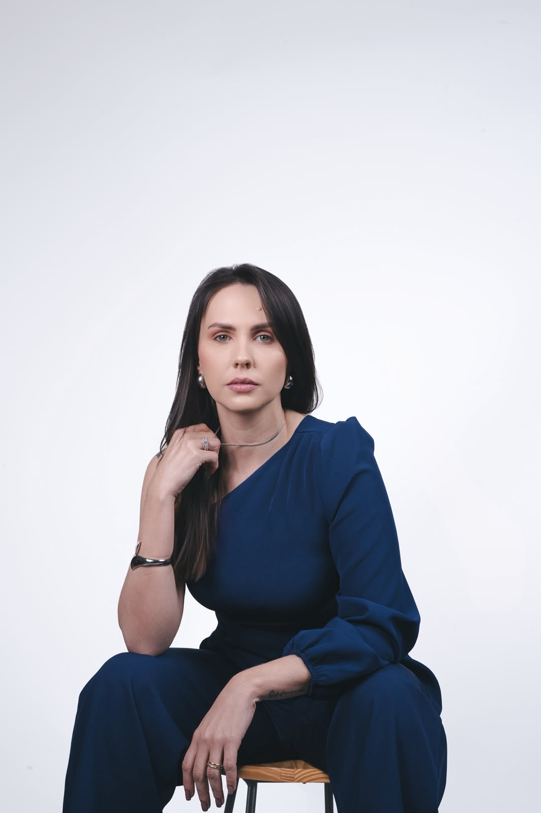
Anna Karoliny TluszczDentista e empresáriaExcelente conteúdo e didática. Tenho a convicção e gratidão que consegui absorver e praticar com muito mais desenvoltura, rotinas na comunicação diária e que ainda preciso melhorar muito, mas que realmente a cada dia minha comunicação está tendo um propósito claro e assertivo.
 João José CarvalhoExecutivo de vendas
João José CarvalhoExecutivo de vendas
O método da Sirlei entregar conteúdo é claro e objetivo e a condução é feita de um jeito simples e fácil de entender.
O principal resultado pra mim foi iniciar com as postagens nas redes sociais, porque nunca tive coragem de fazer, pois achava que não era capaz.
Me fez entender que tenho um propósito e que devo prosseguir.
Sou muito grata por todo o aprendizado, pela troca e pela condução das aulas. Foi um curso que realmente fez diferença para mim, tanto no lado profissional quanto pessoal. ❤️
Investimento
A experiência completa do evento presencial.
Lote de lançamento
Quantidade limitada de ingressos neste valor.
O almoço não está incluso no ingresso.
Para quem quer viver este dia ainda mais perto.
Investimento VIP
Valor único durante todo o período de vendas.
As vagas VIP são encerradas quando preenchidas.
Exclusivo VIP · 19h30
Quando a imersão terminar, a experiência VIP continua. Um jantar assinado pelo chef André Guimarães.
Um grupo seleto, uma mesa de conexões e contato direto com Sirlei em ambiente reservado. Não é uma continuação da aula — é um momento para conversar, perguntar, ouvir e criar relações.
Porque tem oportunidades muito valiosas que começam ao redor de uma mesa.
Quero viver o Jantar de ConexõesLocal
Rua Presidente Bernardes, 2009 — 2º andar
Centro · Cascavel – Paraná
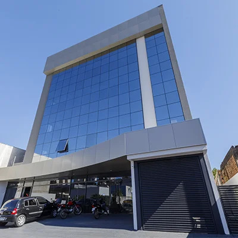
Dúvidas
A imersão terá muitas atividades práticas porque comunicação se desenvolve praticando. Algumas serão individuais, outras em duplas ou pequenos grupos.
Ninguém será colocado em uma situação de exposição constrangedora. O ambiente foi pensado para desenvolvimento, prática e evolução.
Não. O objetivo é fazer sua comunicação representar com mais clareza e segurança a pessoa que você já é.
Você não receberá uma personalidade pronta ou um jeito padronizado de falar. Receberá método, estruturas e ferramentas.
Sim. A Chave da Comunicação não é uma formação de palestrantes.
Ela foi criada para situações da vida profissional e empresarial: reuniões, negociações, vendas, consultas, apresentações, conversas com equipes, networking, posicionamento e tomada de decisões.
Sim. Falar com facilidade e comunicar estrategicamente são coisas diferentes.
Mesmo profissionais que já falam bem podem desenvolver posicionamento, presença, negociação, capacidade de comunicar valor e condução de conversas importantes.
Toda a experiência presencial, kit com materiais exclusivos do evento, dois coffee breaks, atividades práticas, roteiros e estruturas aplicáveis e momentos de conexão entre os participantes.
O almoço não está incluso.
Sim. Os participantes recebem certificado de participação ao final da imersão.
O VIP inclui toda a experiência da imersão e benefícios exclusivos de proximidade.
Lugar reservado nas primeiras fileiras, kit VIP, momento exclusivo com Sirlei Benetti e acesso ao Jantar de Conexões, assinado pelo chef André Guimarães.
Não. O investimento do ingresso VIP é de R$ 1.697 durante todo o período de vendas.
As vagas são extremamente limitadas e, quando forem preenchidas, as vendas do VIP serão encerradas.
Sim. O Jantar de Conexões, assinado pelo chef André Guimarães, faz parte da Experiência VIP.
Não. O almoço não está incluso em nenhuma modalidade de ingresso.
[INSERIR ORIENTAÇÕES SOBRE RESTAURANTES PRÓXIMOS AO LOCAL]
O evento acontece na UNIGUAÇU — Edifício EXXA, Rua Presidente Bernardes, 2009, 2º andar, Centro de Cascavel – PR.
[INSERIR HOTÉIS INDICADOS E ORIENTAÇÕES DE LOGÍSTICA]
[INSERIR PIX, CARTÃO, PARCELAMENTO, NOTA FISCAL]
[INSERIR POLÍTICA DE TRANSFERÊNCIA / TROCA DE TITULARIDADE]
Não. A imersão não será gravada. A experiência acontece apenas presencialmente, no dia 05 de dezembro.
Ainda tem alguma dúvida?
Uma pessoa de verdade vai responder você.
11 97589-2294 Falar pelo WhatsAppO próximo nível
Você já fez a parte difícil: estudou, construiu, trabalhou, entregou, conquistou experiência. Agora existe um próximo nível.
Comunicar o valor do que você já construiu.
Eu quero minha vagaVagas limitadas